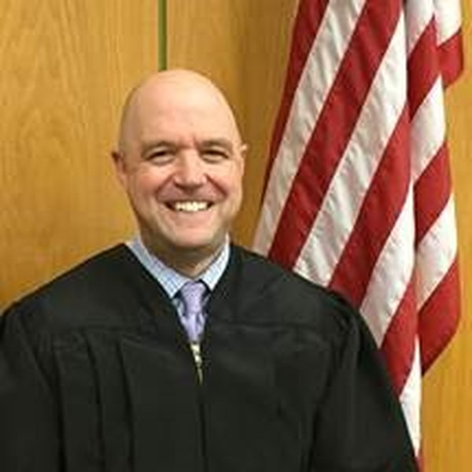

Sean O'Donnell
Judge, King County Superior Court
- Seat
- Position 4 — Charles Johnson seat — open
- Appointing authority
- Elected county judge, not appointed.
- Background
- King County Deputy Prosecuting Attorney. Long criminal trial career before the bench.
- Reported endorsements
- Confirmed primary endorsers (per campaign site): Gov. Christine Gregoire (ret.), U.S. Reps. Adam Smith and Marilyn Strickland, Public Lands Commissioner Dave Upthegrove, Seattle Mayor Bruce Harrell, King County Prosecutor Dan Satterberg (ret.), Pierce County Prosecutor Mary Robnett, Spokane Mayor Lisa Brown, plus 14 county prosecutors, 4 sheriffs, and 200+ judicial officers. Mainstream-Democratic with bipartisan municipal and law-enforcement reach.
- Fundraising
- $188,512 raised as of Jun 5, 2026
What the record actually shows
Facts pulled from public sources: who appointed them, what they did before, what they've said or written, who's backing them. We're not predicting any vote. Why these categories?
-
His background
Career prosecutor. Trial-court judge, not appellate. His instincts are courtroom and case management, not doctrine.
-
How he talks about the law
No clear ideological signature. Moderate King County judicial style.
-
Who's backing him
Cross-partisan endorsement pattern typical of moderate candidates. Doesn't tell you much about how he'd rule on tax cases.
-
His tax record
Nothing public on Article VII or Culliton. Genuine uncertainty.
How this candidate is likely to rule, and why.
Sean O'Donnell is the most genuinely cross-partisan candidate in the 2026 field, and his cross-partisan profile is the source of both his electoral strength and the genuine uncertainty about how he would rule on ESSB 6346.
He was a legislative aide to Republican Senator Slade Gorton in 1995, interned in Democrat Christine Gregoire's Attorney General office, worked under Republican Norm Maleng at the King County Prosecutor's office, and served as a Special Assistant U.S. Attorney under the Obama administration.
He has been a King County Superior Court judge since 2013, serving as chief judge of the Family Law Division and the Criminal Division, and has led multiple statewide task forces on courthouse security, pre-trial release, and court interpreter funding.
His endorser list runs to more than 200 judicial officers across the state, former Governor Christine Gregoire, and elected officials from both parties. He has also received a $500 contribution from Rob McKenna, the former Republican AG who filed the lawsuit challenging ESSB 6346.
O'Donnell has specifically denied any affiliation with the Federalist Society and has not associated himself with Full Court Press despite appearing on a now-deleted version of that organization's 'prospects' page. His judicial questionnaire frames the law through a lens of impact on people, procedural justice, and constitutional fidelity, not through any partisan ideological commitment.
The record on Article VII is genuinely empty, and the cross-partisan donor and endorser pattern adds to rather than resolves the uncertainty.
-
McKenna contribution as ambiguity signal
O'Donnell received a $500 campaign contribution from former AG Rob McKenna, who filed the lawsuit challenging ESSB 6346 and chairs the board of Full Court Press.
That contribution is small enough to be financially insignificant, but in the context of a nonpartisan judicial race where endorsement and donation patterns do most of the signaling work, it is notable. O'Donnell has stated he has no affiliation with Full Court Press and asked to have his photo removed from their website.
Whether McKenna's contribution reflects a genuine assessment of O'Donnell as favorable to the anti-tax position, or simply as a professionally qualified moderate, is not determinable from the record.
-
Green River Task Force and human trafficking prosecutions
Before the bench, O'Donnell served on the Green River Task Force that led to the prosecution of serial killer Gary Ridgway, handled Washington's first human trafficking prosecution, and handled the first case involving commercial sexual abuse of a minor. He was also trained and trained others nationally and internationally on human trafficking prosecution.
This criminal law background is not directly relevant to the income tax question but is relevant to his professional identity: he is a career prosecutor and trial court manager, not a constitutional theorist or appellate practitioner.
-
Two rulings on constitutional questions: firearms and equal pay
In the Montesi case, O'Donnell upheld Washington's weapons surrender statute against a Second Amendment challenge. In the Bleakney case, he ruled that Washington's Equal Pay and Opportunity Act was not superseded by federal law, a case of first impression involving a nurse manager at Providence Hospital. These are the two constitutional rulings identified in his public questionnaire responses. Both were in favor of state statutes, which could suggest a general posture of deference to legislative action, but neither touches the tax uniformity question.
-
Stated judicial philosophy: law begins with constitution, statutes, and precedent
In his 31st District Democrats questionnaire, O'Donnell stated that his 'framework for decision-making begins with the Constitution, laws enacted by the Legislature, and legal precedent that guides the Court in resolving cases.' He emphasized that a faithful interpretation of the law includes 'appreciating its effect on people, families, and communities.' That framing is more associated with living-constitutionalist or purposivist methodology than with strict textualism, but it is also consistent with a justice who upholds ESSB 6346 on narrow grounds without overturning Culliton. Genuine uncertainty persists.
An analytical read on public signals. Not a prediction of any individual vote.
Questions a voter might ask this candidate
- How does a trial court background shape how you weigh real-world disruption when considering whether to overturn precedent?
- Which kinds of cases should the court be most cautious about reaching?
Phrased to comply with Washington's Code of Judicial Conduct, which prohibits candidates from pledging votes on specific cases or issues likely to come before the court. Methodology questions are permitted.
Sources
- King County Superior Court
- O'Donnell for Justice campaign site: About
- O'Donnell for Justice campaign site: Endorsements
- 31st District Democrats: O'Donnell endorsement questionnaire
- Wikipedia: 2026 Washington Supreme Court election
- KOMO News: Big money pours into state Supreme Court races
- Are you Sean O'Donnell or their campaign? Submit a response →